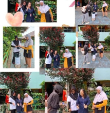

SDN PONDOK LABU 03
Cilandak Kota Jakarta Selatan
🔍
☰
Cilandak Kota Jakarta Selatan
Sampah adalah salah satu masalah lingkungan yang paling signifikan di seluruh dunia, termasuk di Indonesia. Pada tingkat lokal, masalah ini sering kali dimulai dari rumah tangga dan sekolah. SDN Pondok Labu 03 adalah salah satu sekolah yang menyadari pentingnya peran mereka dalam menjaga lingkungan dan mendukung upaya pelestarian alam. Sebagai bagian dari program Adiwiyata, sekolah ini berkolaborasi dengan orang tua siswa dalam membentuk Kelompok Kerja Pemilah Sampah untuk mewujudkan visi sekolah yang ramah lingkungan.
Program Adiwiyata adalah inisiatif nasional di Indonesia yang bertujuan untuk membentuk sekolah yang peduli dan berbudaya lingkungan. Sekolah Adiwiyata tidak hanya fokus pada pengelolaan lingkungan di dalam sekolah, tetapi juga mengajarkan siswa tentang pentingnya menjaga lingkungan dan memberikan mereka pengetahuan serta keterampilan untuk melakukannya. Program ini mengintegrasikan pendidikan lingkungan hidup ke dalam kegiatan belajar-mengajar dan kegiatan ekstrakurikuler, sehingga siswa dapat memahami dan menerapkan konsep ini dalam kehidupan sehari-hari. SDN Pondok Labu 03 telah berkomitmen untuk menjadi sekolah Adiwiyata. Komitmen ini terlihat dari berbagai inisiatif yang diluncurkan oleh sekolah, salah satunya adalah pengelolaan sampah secara berkelanjutan. Pengelolaan sampah ini tidak hanya terbatas pada siswa dan guru, tetapi juga melibatkan orang tua sebagai mitra penting dalam mendukung keberhasilan program.
Untuk mendukung program Adiwiyata, SDN Pondok Labu 03 bersama-sama dengan para orang tua siswa membentuk Kelompok Kerja Pemilah Sampah (Pokja Pemilah Sampah). Kelompok ini berfungsi sebagai tim yang bertugas memastikan bahwa sampah yang dihasilkan di lingkungan sekolah dan rumah siswa dikelola dengan baik. Pembentukan Pokja ini bertujuan untuk memberikan edukasi lebih lanjut kepada siswa dan orang tua tentang pentingnya pemilihan sampah, daur ulang, serta pengurangan sampah plastik. Kolaborasi antara sekolah dan orang tua ini menjadi kunci penting dalam keberhasilan program pengelolaan sampah. Orang tua memiliki peran sentral dalam mendukung kebiasaan siswa di rumah, sehingga program ini bisa berjalan secara konsisten di lingkungan sekolah maupun di rumah. Pokja Pemilah Sampah tidak hanya bekerja di sekolah, tetapi juga berkolaborasi dengan warga sekitar untuk menciptakan lingkungan yang bersih dan nyaman.
Sebagai bagian dari kelompok kerja ini, berbagai kegiatan pemilahan sampah dilakukan secara rutin di SDN Pondok Labu 03. Kegiatan ini melibatkan semua komponen sekolah, termasuk siswa, guru, dan orang tua. Di setiap kelas, terdapat tempat sampah yang berbeda untuk sampah organik, anorganik, dan sampah plastik. Siswa diajarkan untuk memisahkan sampah mereka sejak dini, dan mereka juga diberi penjelasan mengenai dampak negatif jika sampah tidak dikelola dengan baik. Setiap minggunya, Pokja Pemilah Sampah mengadakan sesi edukasi kepada siswa dan orang tua mengenai cara pemilahan sampah yang benar. Selain itu, kelompok ini juga mengajarkan cara mendaur ulang sampah yang dapat digunakan kembali, seperti botol plastik atau kertas bekas. Siswa diajak untuk membuat kerajinan tangan dari barang-barang yang sudah tidak terpakai, yang nantinya bisa digunakan kembali atau bahkan dijual untuk menghasilkan pendapatan tambahan bagi kegiatan sekolah.
Orang tua memegang peran yang sangat penting dalam memastikan keberlanjutan program pengelolaan sampah ini. Di rumah, orang tua diharapkan dapat mendukung anak-anak mereka untuk terus mempraktikkan kebiasaan pemilahan sampah yang telah diajarkan di sekolah. Mereka juga dilibatkan dalam berbagai kegiatan yang diselenggarakan oleh Pokja Pemilah Sampah, seperti kerja bakti di lingkungan sekolah dan lingkungan sekitar, serta sosialisasi pengelolaan sampah di tingkat masyarakat. Kolaborasi ini menunjukkan bahwa pendidikan lingkungan tidak hanya menjadi tanggung jawab sekolah, tetapi juga harus melibatkan keluarga dan masyarakat. Dengan melibatkan orang tua, siswa akan merasa lebih termotivasi untuk menjaga lingkungan dan menerapkan kebiasaan baik di rumah. Orang tua juga mendapatkan edukasi yang bermanfaat mengenai pentingnya pemilahan sampah, yang mungkin sebelumnya belum sepenuhnya mereka sadari.
Kolaborasi antara pihak sekolah dan orang tua melalui Kelompok Kerja Pemilah Sampah menjadi contoh nyata bagaimana pendidikan lingkungan dapat diterapkan secara berkelanjutan, baik di lingkungan sekolah maupun di rumah. Program ini akan terus dikembangkan untuk menciptakan lingkungan sekolah yang bersih, hijau, dan nyaman, serta mendukung terwujudnya sekolah Adiwiyata yang peduli dan berbudaya lingkungan.

Kegiatan pemilahan sampah bersama orang tua dan siswa